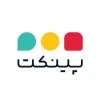
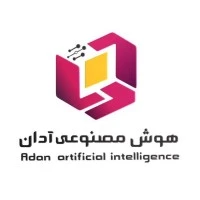
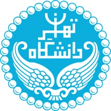
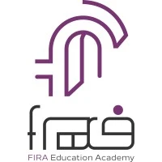
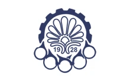
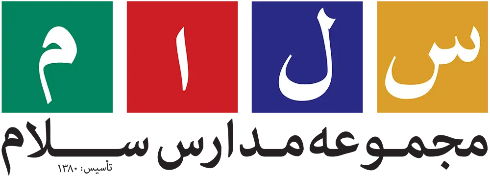
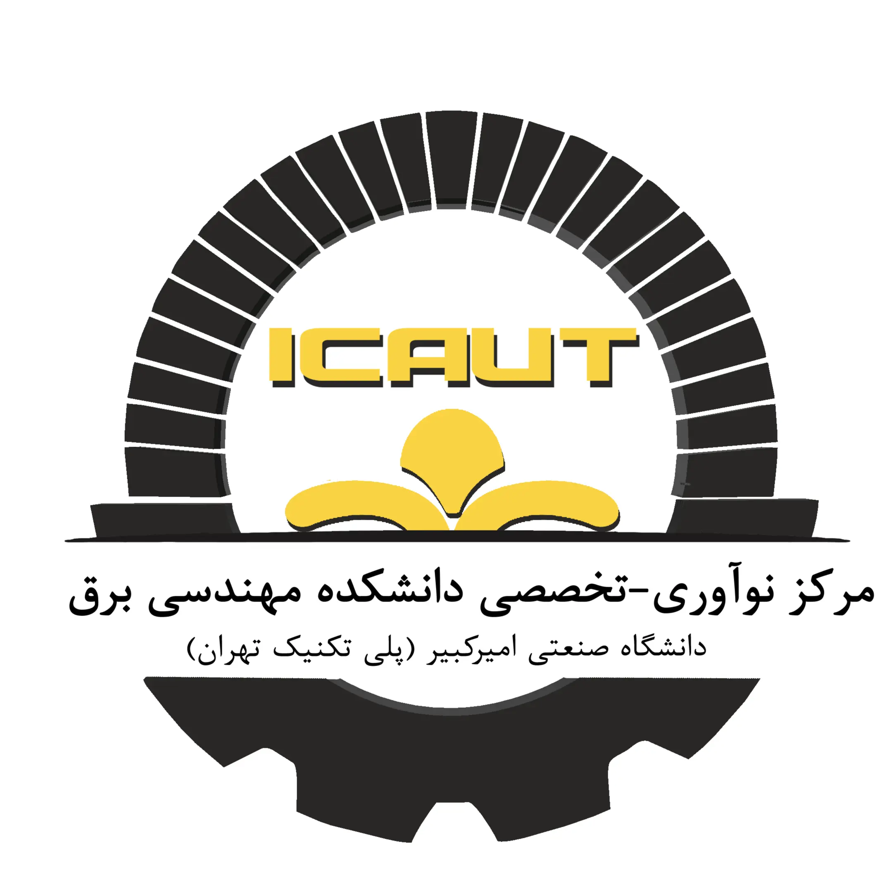
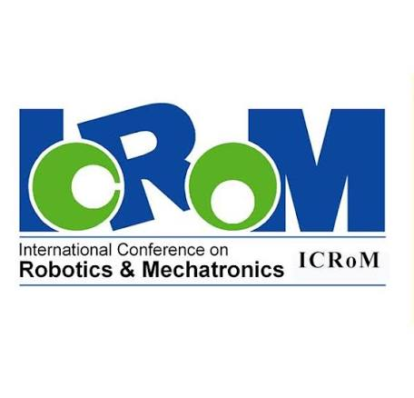
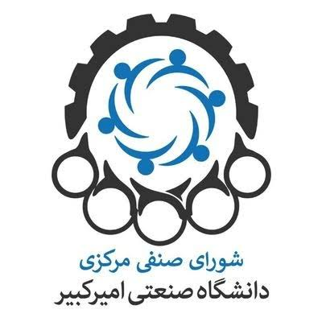

طلاین
شهریور ۱۴۰۵ — اکنون
مهندس ارشد نرمافزار
- توسعهٔ سامانهٔ معاملات B2B طلا در طلاین.
- مشارکت در توسعه و بهبود لجر مالی طلاین.
- بهبود فرایندهای مهندسی با هدف منسجمتر کردن ساختار توسعهٔ نرمافزار.
مهندس ارشد نرمافزار در طلاین
مهندسی بکاند · سامانههای پرداخت · هوش مصنوعی و پردازش زبان طبیعی
amirhossein_sh@outlook.comlinkedin.com/in/amirhsheikh0912 272 3262مهندس ارشد نرمافزار در طلاین هستم، با تمرکز بر مهندسی بکاند، سامانههای مالی و هوش مصنوعی کاربردی. روی معاملات B2B طلا، لجر مالی و بهبود فرایندهای توسعه کار میکنم. تجربهام از توسعهٔ سرویسها با Java و Python و سامانههای پرداخت و تجارت آنلاین تا محصولات مبتنی بر مدلهای زبانی را در بر میگیرد.
بهعنوان همبنیانگذار و مهندس مؤسس Instify، تجربهٔ ساخت محصول از معماری تا پیادهسازی و استقرار را دارم. کارشناسی ارشد مهندسی نرمافزار را در دانشگاه تهران به پایان رساندهام و همنویسندهٔ مقالهٔ PersianMedQA در LREC 2026 هستم. این ترکیبِ تجربهٔ ساخت محصول و پژوهش در پردازش زبان طبیعی، به رویکردم در حل مسائل فنی شکل داده است.
شهریور ۱۴۰۵ — اکنون
مهندس ارشد نرمافزار
شهریور ۱۴۰۲ — مهر ۱۴۰۵
همبنیانگذار و مهندس مؤسس

شهریور ۱۴۰۴ — شهریور ۱۴۰۵
مهندس ارشد نرمافزار

فروردین ۱۴۰۴ — شهریور ۱۴۰۴
مهندس ارشد هوش مصنوعی

شهریور ۱۴۰۲ — شهریور ۱۴۰۴
پژوهشگر هوش مصنوعی
آبان ۱۴۰۱ — فروردین ۱۴۰۴
مهندس نرمافزار Java
شهریور ۱۴۰۰ — آبان ۱۴۰۱
مهندس نرمافزار بکاند (Java) / توسعهدهندهٔ بات
آذر ۱۴۰۰ — آبان ۱۴۰۱

دی ۱۳۹۹ — اردیبهشت ۱۴۰۰
مهندس الکترونیک
شهریور ۱۳۹۹ — اردیبهشت ۱۴۰۰
معاون آموزشی
Adan AI
دستیار مبتنی بر RAG روی بیش از ۱۰ هزار سند مقرراتی بانک ملت.
طراحی معماری پاسخگویی متناسب با زمینه بر پایهٔ دانش مقرراتی سازمان.
Instify · دانشگاه تهران
چتبات هوشمند برای پاسخگویی به پرسشهای آموزشی و اداری دانشجویان.
توسعه برای خودکارسازی پاسخگویی به پرسشهای تکرارشوندهٔ آموزشی و اداری.
Adan AI
دستیار هوشمند برای عملیات بانکی با زبان طبیعی و فرایندهای انتقال وجه.
مشارکت در طراحی معماری تعاملات بانکی از طریق زبان طبیعی.
کارشناسی ارشد · مهندسی نرمافزار کامپیوتر
معدل: ۱۹٫۳ · پژوهش در سیستمهای گفتوگوی هوشمند · عضو آزمایشگاه پردازش زبان طبیعی

کارشناسی · مهندسی کامپیوتر
کارشناسی · مهندسی برق و الکترونیک
LREC 2026
همنویسندهٔ پژوهشی دربارهٔ معیار دوزبانهٔ پرسشوپاسخ پزشکی برای ارزیابی مدلهای زبانی در فارسی و انگلیسی. مطالعهٔ مقاله ↗
مهر ۱۴۰۳ — بهمن ۱۴۰۳
سرپرست دستیاران آموزشی · الگوریتمهای پیشرفته
شهریور ۱۳۹۶ — بهمن ۱۳۹۶
دستیار آموزشی · مبانی برنامهنویسی

مهر ۱۳۹۹ — تیر ۱۴۰۲
مدرس المپیاد ریاضی و کامپیوتر
مهر ۱۳۹۸ — تیر ۱۳۹۹
مدرس برنامهنویسی و رباتیک
خرداد ۱۳۹۸ — اردیبهشت ۱۴۰۰
مدرس برنامهنویسی

شهریور ۱۳۹۸ — آذر ۱۳۹۸
مرکز نوآوری مهندسی برق

شهریور ۱۳۹۸
کنفرانس بینالمللی رباتیک و مکاترونیک (ICRoM)

شهریور ۱۳۹۶ — شهریور ۱۳۹۷
شورای صنفی دانشکدهٔ مهندسی برق
تأکید بر مسئولیتپذیری، قابلاعتماد بودن، پیشبرد مستقل کارها و کمک به رشد و همکاری تیم.
ترجمهٔ فارسی
بعضیها صرفِ حضورشان در تیم، کار را برای همه آسانتر میکنند. امیرحسین یکی از آنهاست.
میتوان روی او حساب کرد که مسئولیت کار را بپذیرد، آن را پیش ببرد و با همهٔ افراد درگیر بهخوبی همکاری کند. لازم نیست مدام پیگیری کنید یا نگران وضعیت کار باشید؛ وقتی کاری را بر عهده میگیرد، میدانید که به فرد مطمئنی سپرده شده است.
چیزی که بیش از همه در امیرحسین برایم ارزشمند است این است که فقط کارها را به انجام نمیرساند؛ به بهتر شدن اطرافیانش هم کمک میکند. دانشش را سخاوتمندانه به اشتراک میگذارد و میداند چطور افراد را برای حل چالشها، بهویژه در یک تیم فنی، کنار هم جمع کند.
او قابلاعتماد، پیشقدم و در مدیریت جنبهٔ انسانی مهندسی توانمند است. همکاری با کسی مانند او، هم به کار و هم به تیم کمک میکند.
متن اصلی انگلیسی
Some people make work easier just by being on the team. Amirhossein is one of them.
He’s someone you can count on to take ownership, keep things moving, and work well with everyone involved. You don’t have to constantly follow up or wonder where things stand — when he takes something on, you know it’s in good hands.
What I appreciate most about Amirhossein is that he doesn’t just get things done; he makes the people around him better, too. He shares what he knows generously and knows how to bring people together to work through challenges, especially within a technical team.
He’s reliable, proactive, and great at navigating the human side of engineering. When you work with someone like him, both the work and the team benefit.
اشاره به توسعهٔ Python SDK و یکپارچهسازیهای لیمو، یادگیری سریع و نگاه محصولی.
تأکید بر حل مسئله، یادگیری فناوریهای تازه، ابتکار و همکاری تیمی.